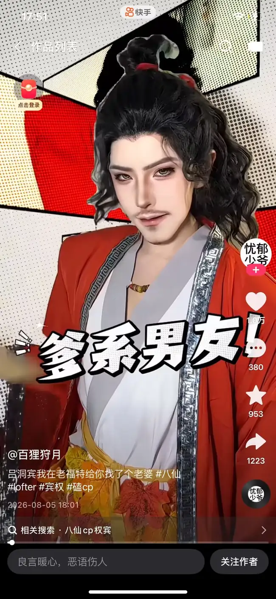
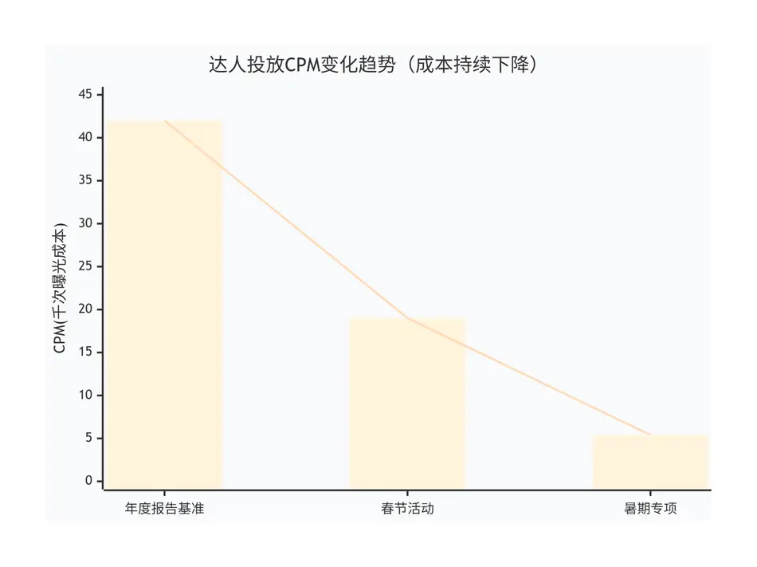

01
PRODUCT POSITIONING / 产品定位
确定产品定位
把“太太橱窗”拆成两层卖点：官方保障（0 手续费、禁 AI）和内容优势（品类齐全、同人复利、官方社群 24h 答疑 + 专人服务）。 再按营销号、真人口播、Cos 演绎三种达人类型，分别给切入角度、参考话术和可借梗。
WORK 03 / KOL
游戏直播讲机制，Coser 给角色感，营销号进行二级解读，泛娱乐负责破圈，同人创作者负责社区深度。 达人不是一份名单，而是一张按内容目标调用的传播网。

核心数据 / RESULTS
SPECIAL CASE / LOFTER 太太橱窗
不是“找几个大号发稿”，而是把约稿平台的产品定位、预算、达人结构和 brief 串成一条可执行的内容链路。先小预算验证，再把跑通的内容加量。
PRODUCT POSITIONING / 产品定位
把“太太橱窗”拆成两层卖点：官方保障（0 手续费、禁 AI）和内容优势（品类齐全、同人复利、官方社群 24h 答疑 + 专人服务）。 再按营销号、真人口播、Cos 演绎三种达人类型，分别给切入角度、参考话术和可借梗。
BUDGET / 预算
发布时间即日起到 10 月中旬；总预算 8w：下单 5.2w、投流 2.5w、官号加热 1–3k。 按 1:3:6 分头部 1 / 中部 3 / 尾部 6，对应 1w / 1.8w / 2.4w；考核曝光、互动和 CPM。
STRATEGY / 策略
渠道按抖音 40% / 小红书 20% / 快手 40%；内容类型真人口播 40–50%、营销号 50%、Coser 0–10%。 选人表里同时看报价、日常 CPM、简单 CPM、内容切口和参考，不只看粉丝量。
BRIEF · SCRIPT · STORYBOARD / 执行
Brief 先给方向：兵权 CP 向、绑系男友等，每个方向配参考视频、站内二创和素材来源； 脚本阶段逐段顺逻辑、删官方腔、埋必提 tag；分镜阶段用成片抽帧确认角色、场景、字幕和口播位置。
OUTPUT / 视频输出
成片按账号和渠道排期上线。真人口播负责把“约稿”讲成同人女自己的语言，营销号负责二级解读和破圈， Coser 负责角色感。发布后看评论区、互动和 CPM，把高潜内容挑出来加投。
LAUNCH · REVIEW / 上线复盘
11 条内容上线，先看快手 3 条样本：累计 141w、消耗 1.12w、综合 CPM 7.94；夕音单条 116w、CPM 3.83。 整体 423w+、较预期 +40%。复盘把朱阿伦 171w / 13w 互动的标题、内容和评论区拆成可复用模板。
FEATURED CONTENT / 01
朱阿伦 / 抖音 · 把同人圈的“历史课”梗做成短视频，用课堂场景承接“太太橱窗”的约稿服务；171w+ 曝光、13w+ 互动。
打开小红书原帖 →
这次最值得复用的不是某一条视频，而是“1:3:6 + 三种内容切口 + 小预算测试”的方法： 先定产品定位，再分预算，按内容目标调用达人；跑出高互动内容后加投，把评论区高赞沉淀成下一轮选题。
冷启阶段不要一上来铺量：先用 3 条样本验证内容切口和 CPM，再把预算加到已经被数据验证的达人类型上。